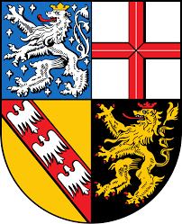

Wir verwenden Cookies, um die Funktionalität der Website zu gewährleisten, das Nutzererlebnis zu verbessern und Werbung zu personalisieren. Weitere Informationen finden Sie in unserer
Datenschutzerklärung
,
Impressum
und
Kontakt
.
Alle ablehnen
Einstellungen
Alle akzeptieren
Statistik-Cookies
Werbe-Cookies
Speichern
Sprache wählen:
Deutsch ▾
Deutsch
Українська
English
العربية
Türkçe
Български
فارسی
Bosanski
Македонски
Polski
Română
Italiano
हिन्दी
Allgemeine 300 Fragen
Fragen nach Bundesland
Baden-Württemberg
Bayern
Berlin
Brandenburg
Bremen
Hamburg
Hessen
Mecklenburg-Vorpommern
Niedersachsen
Nordrhein-Westfalen
Rheinland-Pfalz

Saarland
Sachsen
Sachsen-Anhalt
Schleswig-Holstein
Thüringen
Test Simulation
 Allgemeine 300 Fragen
Allgemeine 300 Fragen


 Test Simulation
Test Simulation